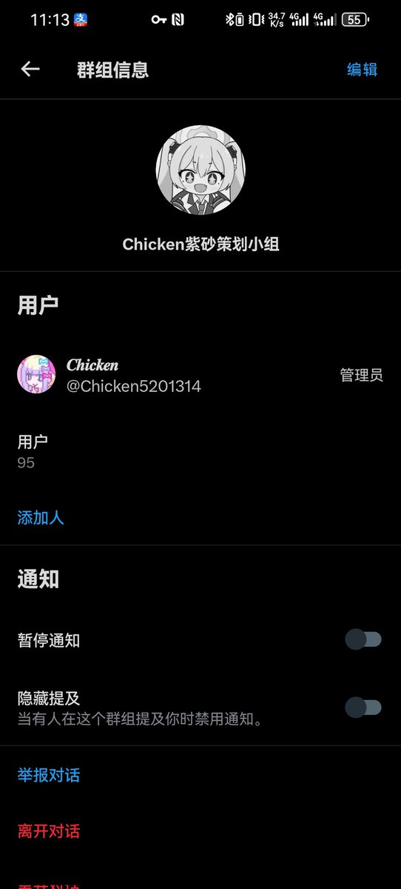
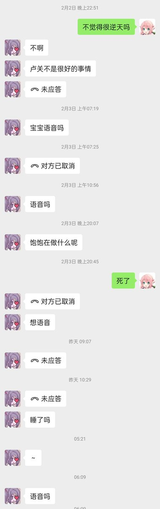

@overdosewiki @N_N_DET 战斗，爽！战斗，爽！战斗，爽！战斗，爽！战斗，爽！战斗，爽！战斗，爽！战斗，爽！战斗，爽！战斗，爽！战斗，爽！战斗，爽！战斗，爽！战斗，爽！战斗，爽！战斗，爽！



董晗（chicken，东东）
推特：@N_N_DET
基础罪名
1. 建立自杀群，杀害至少一人，沦害至少一人https://t.co/wa36mDZpKe
2. 性骚扰，直发鸡吧图 割蛋血图 她人裸照 嫖娼、语言性骚扰女性要操人、半夜电话骚扰https://t.co/oO1BHDVMja
3. 装MtF或不装而诈骗金钱
4. 在B站发布od内容（均已注销） https://t.co/I35w3YQw4c
推特：@N_N_DET
基础罪名
1. 建立自杀群，杀害至少一人，沦害至少一人https://t.co/wa36mDZpKe
2. 性骚扰，直发鸡吧图 割蛋血图 她人裸照 嫖娼、语言性骚扰女性要操人、半夜电话骚扰https://t.co/oO1BHDVMja
3. 装MtF或不装而诈骗金钱
4. 在B站发布od内容（均已注销） https://t.co/I35w3YQw4c